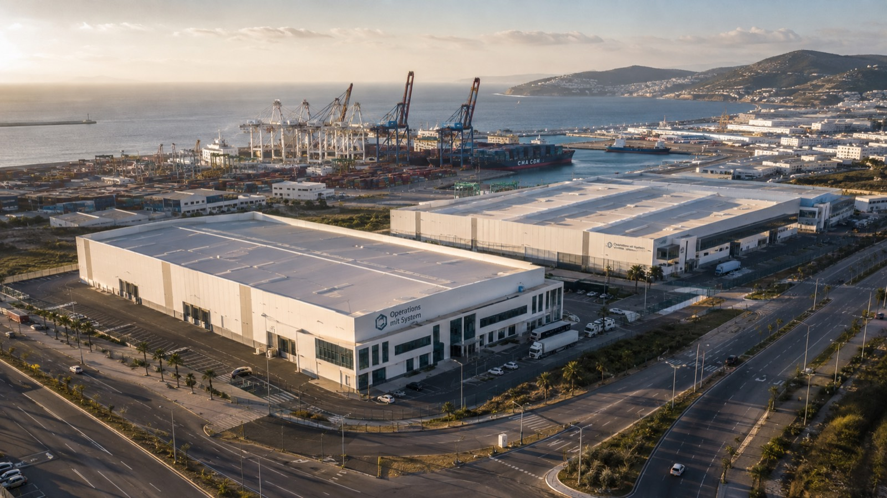
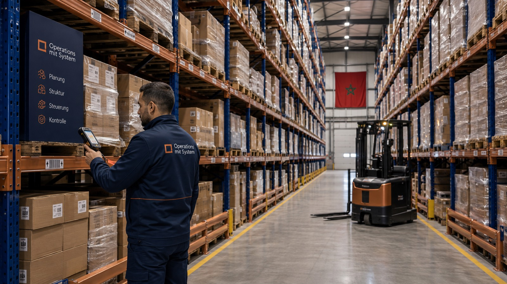

Kompakt und ohne Beratersprech: welche Vorteile der Wechsel bringt, welche Fördermittel Sie als deutsches Unternehmen nutzen können, und wie die Logistik wirklich funktioniert.

Wettbewerbsfähige Lohnkosten bei deutscher Prozessführung. Ihre genaue Ersparnis rechnen wir in der kostenlosen Wirtschaftlichkeitsprüfung vor — belastbar, nicht geschätzt.
Das EU-Assoziierungsabkommen mit Marokko macht Ihre Ware zollfrei — wir liefern jede Sendung mit EUR.1-Präferenznachweis. Die Ursprungsregeln prüfen wir vorab je Produkt.
Ihr Vertragspartner ist eine deutsche GmbH: Preise in EUR mit Preisbindung, kein Währungsrisiko, Gerichtsstand Deutschland, NDA nach GeschGehG vor jedem Austausch.
14 Tage Seefracht statt 5–7 Wochen aus Asien: weniger Kapitalbindung, schnellere Reaktion auf Nachfrage, keine Suezkanal-Abhängigkeit. Notfalls geht es per LKW in 3–4 Tagen.
Saisonspitzen, Aktionsware, neue Formate: Wir skalieren Personal und Schichten flexibel — Sie zahlen Leistung, keine Fixkosten für eigene Anlagen und Hallen.
Kurze Seewege statt Interkontinental-Fracht, trockene Prozesse ohne Abwasser, LED und effiziente Antriebe — belastbare Argumente für Ihren CSRD-Bericht.
Prozess-Ingenieure mit Lean-Six-Sigma-Hintergrund führen den Standort. Sie sprechen Deutsch mit uns — in Aldenhoven, Düsseldorf oder direkt in Tanger.

Marokko ist kein Experiment, sondern etablierter Industriestandort: Afrikas größter Automobil-Exporteur mit direktem Draht nach Europa. Bekannte Beispiele deutscher und europäischer Industrieansiedlungen:
Der deutsche Bordnetz-Spezialist produziert seit Jahren in mehreren marokkanischen Werken Kabelsätze für die europäische Automobilindustrie.
Der Wuppertaler Automobilzulieferer fertigt in Kénitra Bordnetzsysteme — ein klassisches Beispiel deutscher Lohnfertigung in Marokko.
Der bayerische Interieur- und Bordnetz-Hersteller zählt zu den etablierten deutschen Produzenten im Land.
Fertigt in Tanger Rotorblätter für Windkraftanlagen — Hightech-Produktion „made in Morocco" für den Weltmarkt.
Betreiben in Tanger und Kénitra zwei der größten Automobilwerke Afrikas — mit hunderttausenden Fahrzeugen pro Jahr für den Export.
Halbleiter, Elektronik, Kabelsysteme: Die internationale Zulieferindustrie hat Marokko als verlängerte Werkbank Europas fest etabliert.
Der deutsche Staat fördert die Erschließung afrikanischer Märkte aktiv — viele Mittelständler wissen das nicht. Die wichtigsten Programme:
Das BAFA bezuschusst Beratungsleistungen rund um Ihr Afrika-Vorhaben (Markteintritt, Machbarkeit, Partnersuche) mit bis zu 85 % der Kosten. Wir kennen das Verfahren aus eigener Antragspraxis und sagen Ihnen, was förderfähig ist.
Geförderte Geschäftsanbahnung: Informationsreisen, Machbarkeitsunterstützung und Kontaktvermittlung für den Zielmarkt Marokko — organisiert über AHK und Projektträger.
Wenn Sie selbst investieren (z. B. Ihre Anlage beistellen), sichern Investitionsgarantien des Bundes politische Risiken ab; Exportkreditgarantien decken Ihre Lieferungen. Die Voranfrage ist kostenlos.
Steuerfreiheit in der Freizone (Jahre 1–5) und marokkanische Investitionszuschüsse fließen in unseren Standort — und kommen bei Ihnen als dauerhaft besserer Stückpreis an. Sie müssen dafür nichts beantragen.
Wöchentliche Regelabfahrten, Sammelgut (LCL) für kleinere Mengen, volle Container (FCL) ab ca. 10 Paletten. Chargenrückverfolgung bis auf Palettenebene — Sie wissen jederzeit, wo Ihre Ware ist.

Schicken Sie uns Ihr Produkt und Ihre Jahresmenge. Sie erhalten unser NDA, dann die Wirtschaftlichkeitsprüfung — inklusive Fördermittel-Check.